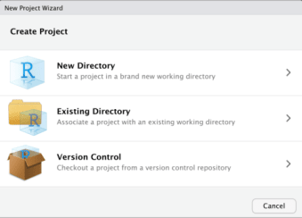

{kind=link}
{kind=link}
{kind=link}
{kind=link}
{kind=link}
{kind=link}
2 + 2[1] 4
This is the window that appears to us when we open R. As you can see, there are multiple things that we will check. But, first we are going to create our first project.
| 1.-Create Project | 2.-Project Type |
|---|---|
|  |  |
| Here you have three options: since you are creating a new project, choose New Directory. | Select the type of project, as you can see, we have different options; or now, we will choose New Project |

Your name project should be precise and not too long. In our case, we will name it “Hertie Coding Club R”
| 3.-Choose folder | 4.-Icon project in project folder |
|---|---|
 |
 |
| Here we show the folder in where we will save our project | Once you created your project, it should appear an icon like this within your folder. |
In R, the working directory is the folder or directory where R will look for files and where it will save output files. I firmly believe setting the working directory is one of the most critical steps when working with R, as it can save you time and prevent errors.
wd() makes it easier to read and write files in your R script.There are multiple ways to decide which folders you should have with your r project.
Some of them look like this:


Personally, I like this approach:
This structure is based on these proposed coding framework.

I’ve been working with this folder structure for a while, and it’s super helpful because once you are used to it, it’s super fast to search your outputs, scripts, etc. If you want to know more about these approach and why a coding framework is important, please take a look to this work lead by Fernando Alarid-Escudero and other scholars
We will create our first R Script. For that please go to Fil -> New File -> R Script

Once we create our script, it will show us a window with a tab called “Untitled1”. Now, we need to save that script in our analysis folder. For that, we need to go to File -> Save As. Next, we need to select the folder within our project where we want to save our script. Following the good practices recommended here, I’ll keep it in my analysis folder. I’m naming my script as “first_script”.


It’s important that you have a really clear idea about the RStudio panes concept. This panes allow users to divide the workflow. Each pane can display different types of information, such as code, console output, plots, help files, and data frames. It enables users to organize their workspace in a more efficient way and to customize their RStudio according to their needs. We will explain every R section.

The source pane is the main workspace for creating and editing R scripts, and it provides features for syntax highlighting, code completion, and error checking.
With this commands, you can select your code and run your code.
| “Command + Return | “Control + Enter” |
This code will excute and it will be showed in the console.
When a user types in a command in the console, like for example assigning a variable or running a function, R processes the command and generates the output, which is displayed in the console. The console is a critical tool for debugging R code, as it allows users to see the output of their commands and to identify errors and bugs in their code. In summary:

In the last pictures, for example, we evaluated the expression
2 + 2[1] 4As you can see, in our console it shows the operation that we ran. (Remember the commands to run your code). One of the shortcuts that I use often is the ↑ key. Pressing the top arrow shows the last code that you executed; pretty useful if you don’t want to rerun your code
In R, the environment refers to the collection of variables and their values that are currently stored in the memory. Each time a user creates a variable or loads data into R, those variables and data are stored in the environment. One of the things that I like about using RStudio as a IDE is practically this nice way of putting all the varaibles, data functions and every object that you are loading in your environment. In summary, the environment can be thought of as a workspace where the user can manipulate and analyze the data.
The Environment tab of this panel shows you the names of all the objects that you have been creating. For example, you can see information like the number of observations and rows in data objects; lists, funtions, etc.


In R, files and directories helps you managing data, plots and code. This pane provides access to the files and directories on the user’s computer. If you can see close, it will show your current working directory; this helps you to check if you are working in the correct directory. Users can navigate through the file system, create new files and directories, and open or delete existing files. The pane also provides features for searching and filtering files, as well as organizing them into projects. I personally use it to preview plots, install packages and check documentation.

Alarid-Escudero, F., Krijkamp, E. M., Pechlivanoglou, P., Jalal, H., Kao, S. Z., Yang, A., & Enns, E. A. (2019). A Need for Change! A Coding Framework for Improving Transparency in Decision Modeling. PharmacoEconomics, 37(11), 1329–1339. URL
Negoita, L. (2021, July 5). How to organize your analyses with R studio projects. R (for ecology). URL
Cite this page: Roa, J. (2023, April 12). RStudio 101. Hertie Coding Club. URL
{kind=link}